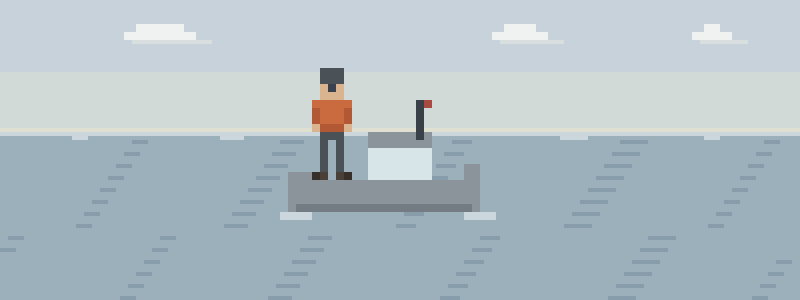

Underway, without warning
- The winch. A loaded sheet, a gloved hand, half a second. Now it’s crush injury, wound care, and splinting on a deck that won’t hold still.
- Recovered, not rescued. You got him back aboard in eight minutes, and the dangerous part isn’t over. Cold-water casualties are handled gently, wrapped right, and watched — the rescue was the easy half.
- Twenty miles out, chest pain. The owner is gray in the cockpit and calling it seasickness. You have aspirin, a radio, and a decision that improves the earlier you make it.
The watch-standing five
Ordered for how trouble comes aboard:
- Patient Assessment — the radio report is only as good as the assessment under it
- Bleeding & Wounds — lines and winches crush and cut — pressure, packing, tourniquet
- Cold Injuries — overboard recovery is a cold-water problem after it stops being a rescue
- Medical Emergencies — cardiac aboard — stop the exertion, aspirin, and the early call
- Evacuation — call early, report clearly: position, patient, status, needs
Then pressure-test it
Interactive scenarios — one decision at a time, tempting mistakes included, debrief at the end:
- It’s Not Indigestion — chest pain, denial, aspirin — and the early call
- The Burrito — the recovered swimmer, handled gently, wrapped right
- Wiggle, Feel, Warm — splint it so it survives the ride back in
The certification question, honestly. “Wilderness First Aid” isn’t a regulated credential. No government body defines what a WFA card means — it means whatever the company that printed it says it means. What counts in front of a patient is whether you can do the work. This course teaches the work, free, and issues a record of completion — not a certificate, and we won’t pretend otherwise. STCW medical training and USCG requirements for commercial crew are real and stand — this substitutes for none of it. It’s the free fluency underneath: for the recreational skipper, and for the licensed one between renewals. If nobody requires you to hold a card, what you need are the skills, not the laminate.
What this is
Fifteen lessons, a 40-question knowledge check, sixteen practice scenarios, a printable field reference card, and a kit checklist. Free, no account, nothing recorded about you, source on GitHub. It teaches decision-making, not hands-on skill — practice the hands-on parts on a real, padded, complaining friend.
Other people who read water: whitewater rafters, kayakers & packrafters · sea kayakers, SUP & open-water paddlers · canoe trippers & Boundary Waters explorers